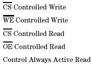
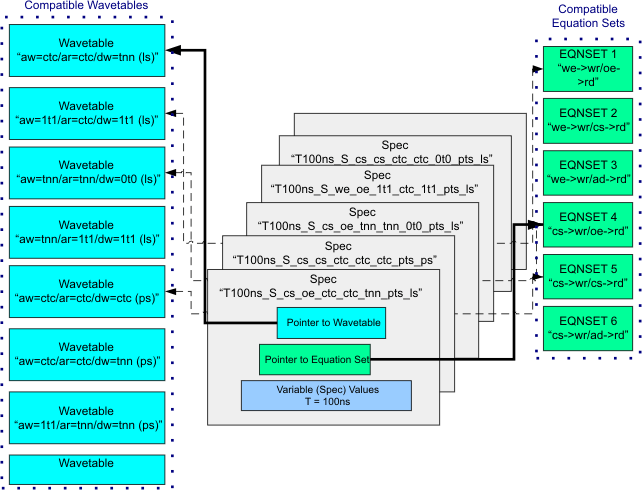

Equation set compatibility for APG patterns
In this section compatible Equation Sets are discussed. The difference between the device operation variations is in which control pin controls or gates the selected operation. The five operation variations are:

The pin that controls the operation is typically the pin that becomes active the latest in time and/or becomes inactive the earliest in the cycle. The Equation Set determines the time in the cycle where the test system edges occur. A collection of compatible Equation Sets can be defined, one for each operation variation. The equation sets are compatible because they defined with the same edge usage convention. That is each equation set uses the same test system edges at the beginning of each pin's respective regions, Pre-Active, Active, Post-Active.
The title of each Equation Set should include a description of which form of control is defined for each operation. This is demonstrated in the following example:
"we->wr/cs->rd pts timing"
The title describes the equation set to be defined to perform a WE controlled write operation(we->wr) and a CS controlled read operation (cs->rd). The syntax for the last operation on the list above is a little different. In this operation both the CS and OE pins are held active at all times. It is the changing of the address bus that gates the read operation. So the syntax for the "Control Always Active Read" operation is ad->rd.
Of course the pts in the title indicates that this equation set is defined
with pseudo time sets.
Using this methodology a library of compatible equation sets can be defined to cover most test needs.
Mixing and matching with the spec set
Now we have demonstrated how to create a library of compatible Wavetables and a library of compatible Equation Sets. The Spec Set binds a Wavetable and an Equation Set.
The Wavetables are defined with a variety of bus formats. Since they are compatible they can each be used interchangeably in the execution of the same pattern and achieve the same functional device behavior. The Wavetables are compatible because the active region logical States use the same physical waveform DC/DC power units definitions for each respective pin. For example PWF #0 is defined to drive a logical 0 and PWF #1 is defined to drive a logical 1 in the active region for the address bus in all of the Wavetables.
The Equation Sets are defined to produce a variety of controlled operations. They are considered compatible with themselves and with the Wavetables because of the common usage of the test system edges. The usage takes into account how the edges are assigned to each region of the cycle and to the common definition of Pseudo Time Sets.
Since the Wavetables and the Equation Sets are all designed to be compatible the Spec Set can interchangeably bind any combination of operation control and bus formats. The beauty of this convention is that any combination selected can run with any pattern that was created using one of the compatible Wavetables.
If you consider that the Spec Variable T can be changed to other values and that the timing scales with the period, a great many Specs can be created to meet the test's needs.

The title of the spec set needs to include the differentiating aspects of the selected equation set and wavetable so that it can be correctly identified from a long list of spec sets. the length of the spec set title can therefore be a little long to be able to include all of the information. The following example illustrates this:
T100ns_S_we_cs_1t1_ctc_tnn_pts_ls Each of the fields between the underscores are defined as Field #1- Setting of test system Period. (Spec Variable T) Field #2- Timing is Scaled to the Period or Fixed. (S/F) Field #3- control signal which controls the write operation. (cs/we) Field #4- control/address signal which controls the read operation. (cs/oe/ad) Field #5- format of address bus during a write. (ctc/1t1/0t0/nt1/nt0/ntc/tnn) Field #6- format of address bus during a read. (ctc/1t1/0t0/nt1/nt0/ntc/tnn) Field #7- format of data bus during a write. (ctc/1t1/0t0/nt1/nt0/ntc/tnn) Field #8- Wavetables and Equation Set using Pseudo Time Sets. (pts) Field #9- Wavetables using logical or physical syntax. (ps/ls)